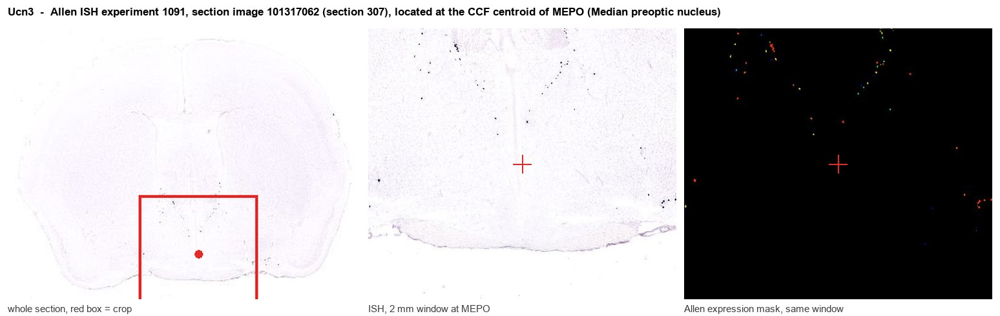

Ucn3
Spatial tier: STRICT_EXCLUSIVE · Class: OTHER · Top region: MEPO (Median preoptic nucleus) · Positive regions: 9/554
51.6Discovery Score
39.4Targetability Score
CEvidence grade C
What this means: Ucn3: predicted fine-region profile is strict-exclusive, with 9 positive regions out of 554 (limit 12); direct spatial validation is required.
Function in MEPO: evidence, prediction, innovation
- Gene function
- Ucn3 encodes urocortin 3 (stresscopin), a secreted 38-residue neuropeptide of the corticotropin-releasing factor family that binds selectively to CRF receptor 2 (CRHR2) with negligible CRHR1 affinity. CRHR2 is Gs-cAMP coupled, and urocortin 3 acts in stress recovery, anxiety-like behaviour, feeding and glucose regulation.
- Region function
- The median preoptic nucleus integrates thermal, osmotic and humoral signals to drive thermoregulation, thirst, sleep and fever; the surrounding preoptic area holds the core circuitry for parental and social behaviour.
- Published in this region
- expression only No region-specific literature found for the median preoptic nucleus itself. Closest: Autry et al. 2021 (eLife) mapped Ucn3 expression as restricted to the perifornical area, with additional cells in the medial preoptic area, posterior BNST, medial amygdala and nucleus ambiguus, and showed perifornical Ucn3 neurons drive infant-directed attack; inhibition suppresses infanticide in virgin males, activation disrupts maternal behaviour, and projections to VMH, ventral lateral septum and amygdalohippocampal area drive distinct components of neglect and aggression.
- Predicted function
- Prediction: Preoptic Ucn3 cells would supply CRHR2-mediated modulation of homeostatic preoptic circuits, biasing thermoregulatory and stress-recovery output and braking preoptic parental circuitry. Ucn3 deletion or astressin2-B blockade should blunt stress-induced body-temperature changes and increase readiness to express parental care; chemogenetic activation of preoptic Ucn3 neurons should suppress pup-directed care and shift thermoregulatory set point.
- Innovation
- ★★★☆☆ 3/5 Ucn3 neurons are functionally dissected in the perifornical area but their preoptic, and specifically median preoptic, population has not been manipulated.
- Tools
- Ucn3::Cre BAC line Tg(Ucn3-cre)KF43Gsat, MMRRC 032078-UCD (Autry 2021); Ucn3 knockout mice; CRHR2 antagonist astressin2-B and urocortin 3 peptide agonist; Crhr2 floxed lines; anti-UCN3 antibodies and Ucn3 RNAscope probes.
- References
Direct evidence located at the region

Allen ISH experiment 1091, section image 101317062 (section 307): the section that contains the CCF centroid of Median preoptic nucleus according to the Allen image-to-atlas alignment (reference_to_image), with a 2 mm window around that point. Left: whole section, red box = window. Middle: ISH signal. Right: Allen's expression-mask view of the same window. open this image in the Allen viewer
Look it up yourself: Allen Mouse Brain ISH for Ucn3Allen reference atlas: MEPO (structure 452)ABC Atlas MERFISH viewer(in the ABC Atlas choose dataset MERFISH-C57BL6J-638850-CCF, colour cells by gene "Ucn3" or by parcellation_substructure "MEPO")All genes confined to MEPO + 3-D brain
Direct spatial evidence
MERFISH REGION LOCATOR

Regional expression figure

Predicted WMB × fine-CCF profile; not direct full-transcriptome spatial measurement.
Spatial profile
Evidence and specificity
- Evidence status
- PREDICTED_FINE
- Direct sources
- None; predicted localization only
- Exclusive threshold
- 12 positive regions out of 554
- Spatial specificity
- 0.404
- Top-region fraction
- 0.143
- Filter status
- PASS
Interpretation limits
- Cell-type-to-region projection is imputed expression, not direct spatial measurement.
- Adult reference atlases do not establish stability across age, sex, strain, state, or disease.
- Transcript abundance does not guarantee protein abundance or genetic-tool performance.